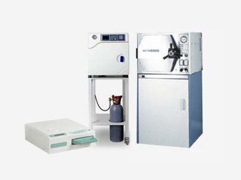

녹내장
에스안과
시력교정
노안/백내장
망막/황반변성
안구건조증
녹내장
소아안과
안성형
예약/상담
녹내장이란
1Day 녹내장 정밀 검사
녹내장이란
녹내장 치료
녹내장
소리없는 시력도둑 녹내장
조기 발견이 중요합니다
녹내장이란?
1. 눈으로 받아들인 빛을 뇌로 전달하는 시신경에 이상이 생겨,
그 결과
시야 결손이 나타나는 질환입니다.
2. 시야에 부분적으로 안보이는 부분이 생기게 되고 치료하지 않고
방치하면 시야결손이 점점 커져 심한 경우 실명에 이를 수 있습니다.
3.전 인구의 2% 정도로 흔한 안과 질환 중 하나이며 전세계적으로
백내장, 당뇨망막증과 함께 실명의 가장 큰 원인이며,
예방할 수 있는 실명의 가장 큰 원인입니다.
녹내장의 원인
녹내장의 주된 원인은 시신경 손상과 혈류장애로 인해 발생합니다.
녹내장이 발생하는 원인은 안압(눈의 압력)이 높아서 발생할 수 있지만 정산 수준이어도
안압의 하루 중 변동폭이 크거나 시신경으로 가는 혈액 순환이 잘 안되는 경우,
유전적 원인
등으로 인해 발생할 수 있습니다.
녹내장 증상
소리없이 찾아 오는
무서운 녹내장
정상안
초기 녹내장
말기 녹내장
초기에는 자각증상이 없다가 점차 시야가 좁아지면서 말기가 되면 시야의 답답함을 느끼고, 더 진행이 되면 결국 실명까지 이르게 됩니다.
녹내장 종류
녹내장은 개방각 녹내장, 폐쇄각 녹내장, 선천적 녹내장, 이차성녹내장으로 구분됩니다.
01. 만성 개방각 녹내장
아무 자각증상 없이 찾아오며 증상이 인지 할 땐 녹내장 말기
방수가 섬유주까지 정상적으로 흘러 들어가지만 섬유주
이후에방수 유출에 문제가 발생하고 수년간에 걸쳐 안압이
서서히 증가하여 발생하는 대표적 녹내장 입니다.
02. 급성 폐쇄각 녹내장
심한 안구 통증과 두통, 어지러움증 등의 증상
홍채가 섬유주를 막으면서 방수 유출이 원할하게
이루어지지 않아 발생하며 안압을 조절하는 시기를
놓치면 영구적인 실명을 하게 됩니다.
03. 선천성 녹내장
눈부심 증상과 눈을 제대로 뜨지 못하며 눈물을 자주 흘림
선천적으로 방수 유출로가 생성되지 않아 발생하는
녹내장이며 소아의 80~90%는 1세 이전에 발생합니다.
04. 이차성 녹내장
이차 원인에 따른 정확한 질병을 파악 후 병행하여 치료
외상 또는 백내장 수술 등의 안과 수술, 당뇨, 고혈압, 포도막염,
백내장, 스테로이드 안약을 장기간 사용한 경우 다양한 원인에
의하여 발병할 수 있습니다.
에스안과의
안전한 수술시스템
UPS 무정전 시스템
정전 등 천재지변의 상황이 발생해도
전원을 안전하게 공급할 수 있는
장치를 보유
365일 항온 학습
수술실은 가장 적합한 온도인 섭씨
20도와 최적 습도 40%를
항상 일정하게 유지

완벽한 멸균 시스템
수술실은 항상 완벽한
멸균관리를 진행하며
청결하게 관리
시야가 좁아졌다 느끼면 이미 늦었습니다
조기검진을 통해서 관리하는 것이 중요합니다
녹내장 조기 검사 대상
·
40세 이후 중장년층일 경우
·
고도근시가 있는 경우
·
건강검진 상 안압이 높은 경우
·
가족 중에 녹내장 환자가 있는 경우
·
당뇨, 고혈압, 동맥경화 등 혈관질환이 있는 경우
·
재발성 포도막염이 있는 경우
·
편두통이 지속적으로 반복되는 경우